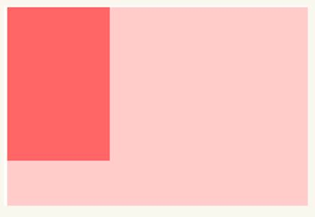
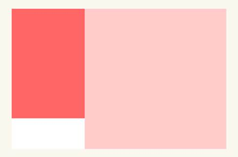
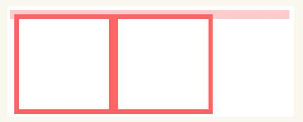
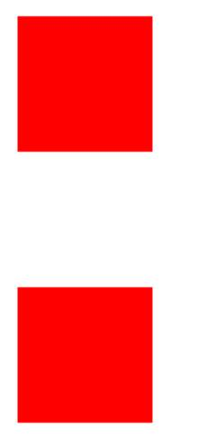
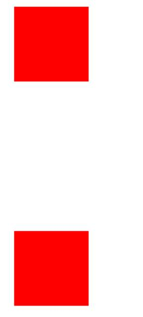

一、BFC
BFC(Block formatting context)直译为“块级格式化上下文”。它是一个独立的渲染区域，只有Block-level box（块）参与， 它规定了内部的Block-level Box如何布局，并且与这个区域外部毫不相干。
二、BFC的布局规则
1、内部的Box会在垂直方向，一个接一个地放置。
2、Box垂直方向的距离由margin决定。属于同一个BFC的两个相邻Box的margin会发生重叠
3、每个元素的margin box的左边， 与包含块border box的左边相接触
盒模型=content+padding+border+margin。Width指的是content的宽，height=content的高。
4、BFC的区域不会与float box重叠。
5、BFC就是页面上的一个隔离的独立容器，容器里面的子元素不会影响到外面的元素。
6、计算BFC的高度时，浮动元素也参与计算
三、哪些元素或属性能触发BFC
根元素
float属性不为none
position为absolute（有定位的父元素或者html）或fixed（可视窗口）
display为inline-block, table-cell, table-caption, flex, inline-flex（css3）
overflow不为visible
四、BFC的作用及原理
1、自适应两栏布局
<style>
.aside{width:100px; height:150px; float:left; background:#f66;}
.main{height:200px; background:#fcc;}
</style>
<body>
<div class=”aside”></div>
<div class=”main”></div>
</body>

给main添加overflow: hidden;

2、清除内部浮动
<style>
Div{width:500px; border:10px solid #fcc}
P{width:100px; height:100px; border:1px solid #f66; float:left;}
</style>
<body>
<div>
<p></p>
<p></p>
</div>
</body>

给div添加overflow：hidden

3、防止margin重叠
<style>
P{width:100px; height:100px; background:#f00; margin:100px;}
</style>
<body>
<p></p>
<p></p>
</body>

给第二个p添加一个盒子并添加overflow:hidden;
